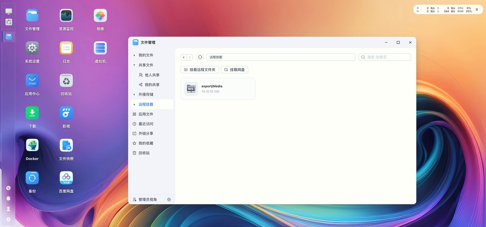

奶昔🥤
@realNyarime
@miantiao_me 主要还是迁移成本，试试TrueNAS吧也是基于Debian的

面条
@miantiao_me
这两天时间轴连续几次刷到飞牛 OS , 翻出退役的 NUC 装了一下。
颜值的确不错，Debian 12 + Root 权限的确让人比较心动。
但是想到迁移成本和以后的数据安全性，还是忍住不迁了。
继续使用 OMV，虽然丑一点但是可以完全掌控，出问题也好修复。 https://t.co/aEDbCp42ib